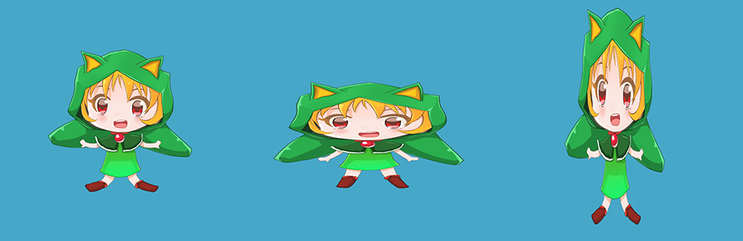
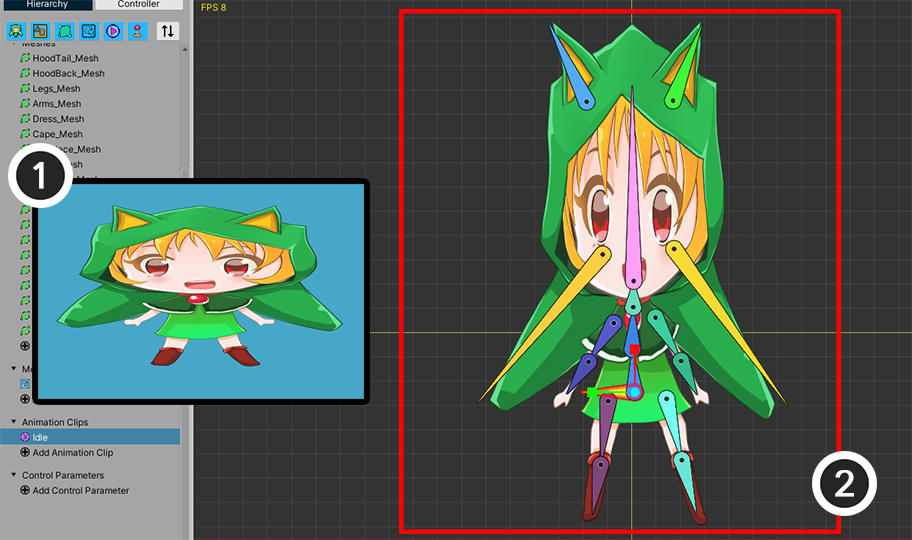
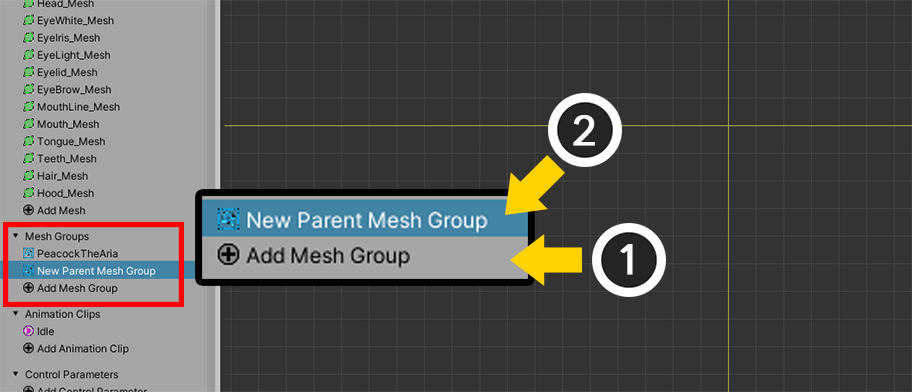
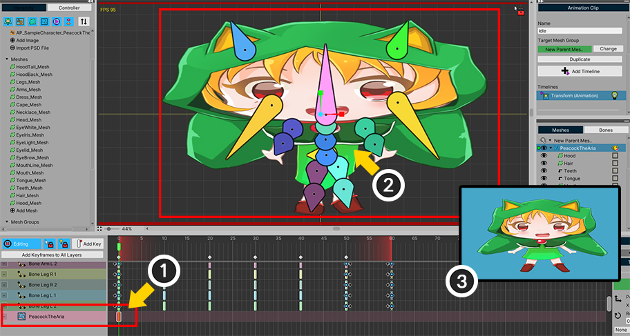
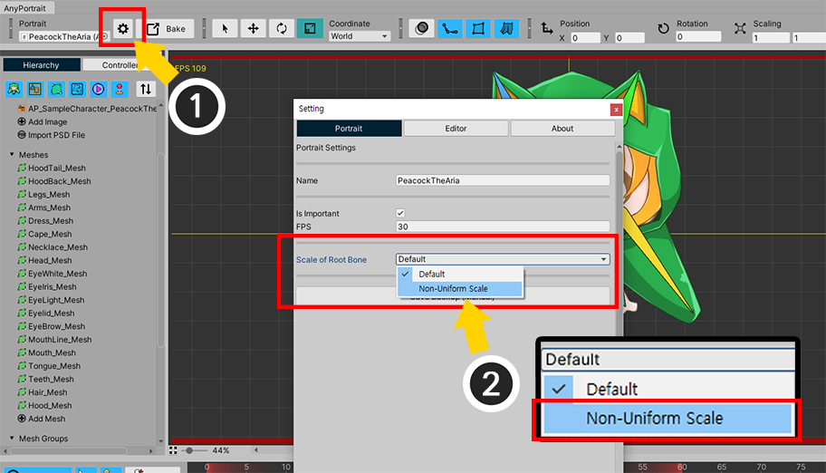
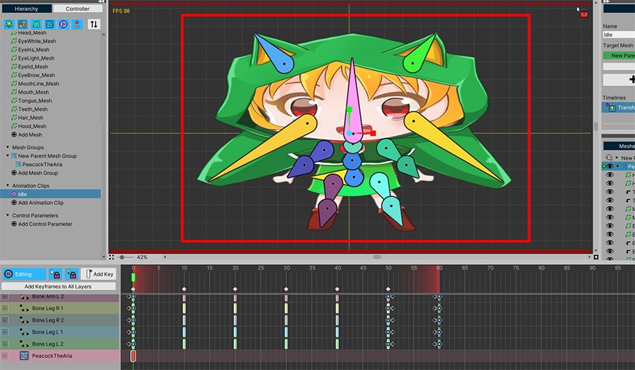
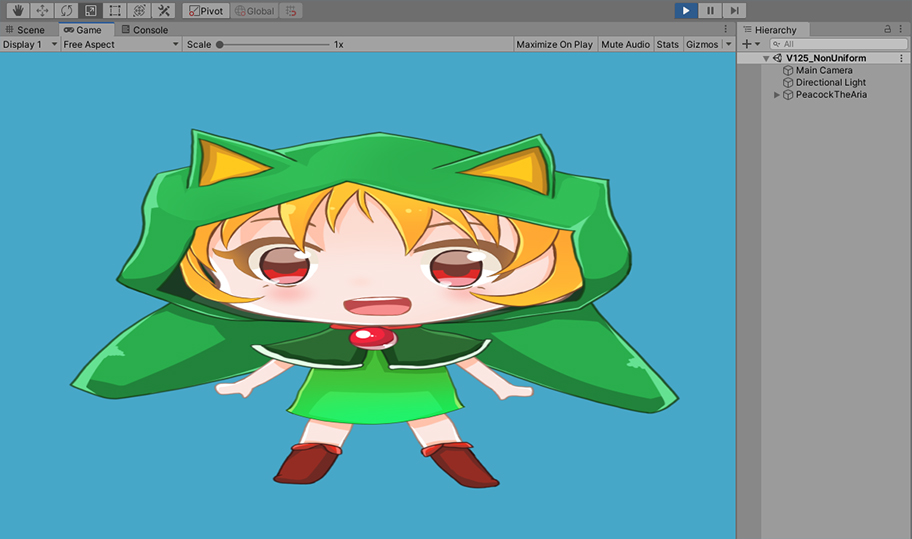
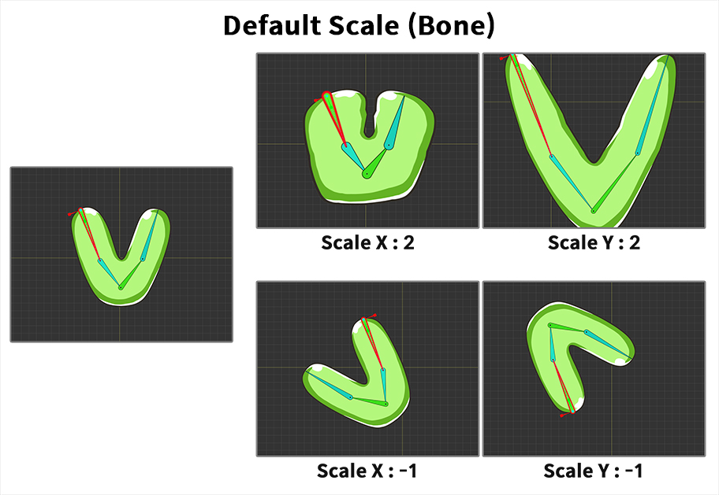

AnyPortrait > 메뉴얼 > Non-Uniform 크기 옵션
Non-Uniform 크기 옵션
1.2.5

위 이미지와 같이 캐릭터들의 크기를 X나 Y축으로 늘리는 것을 만드는 것은 간단해보이지만,
의외로 이것은 AnyPortrait에서 지원되지 않는 기능입니다.
AnyPortrait의 시스템에서 위치, 회전, 크기는 Unity의 그것과 다르게 설계되었습니다.
이 방식은 일련의 본들의 스케일이 왜곡되지 않고 변경되는 장점이 있습니다만, 반대로 위와 같이 비정형의 크기 변환을 만드는 것에는 제한점이 있습니다.
하지만, AnyPortrait v1.2.5에 추가된 옵션을 통해서 제한적으로나마 비정형의 크기 변환이 가능해졌습니다.
이 페이지에서는 이 옵션과 더불어서 "본으로 리깅된 캐릭터 전체의 크기"를 비정형으로 변경하는 방법을 다룹니다.
유니티에서 크기를 제어하기

이것은 가장 권장되는 방법입니다.
(1) 부모가 될 비어있는 GameObject를 새로 만듭니다.
(2) AnyPortrait로 제작된 캐릭터를 (1)에서 만든 GameObject의 자식으로 등록합니다.
이후에 부모가 된 GameObject의 Transform을 제어하여 위치, 회전, 크기를 변경하면 됩니다.
이 방법은 가장 안정적이며, 특히 메카님이나 타임라인과 연동되었다면 필수적으로 적용해야합니다.
AnyPortrait 내부에서 캐릭터 크기를 제어하기
다음으로, AnyPortrait 내부에서 캐릭터의 크기를 전체적으로 제어하는 방법을 알아봅시다.
리깅이 된 경우에, 전체의 크기를 제어하는 방법으로 가장 먼저 생각이 나는 방법은 "루트 본(Root Bone)"의 크기를 조절하는 것입니다.
이 방법은 AnyPortrait가 아닌 다른 엔진이나 툴에서 대부분 유효합니다.
한번 "루트 본"의 크기를 바꾸어봅시다.

위 캐릭터는 1개의 루트 본을 가집니다.
루트 본의 X 크기를 증가시켜봅시다.

루트 본의 X를 늘린다면 일반적으로 (1)의 이미지와 같은 결과가 나올 것이라고 기대합니다.
하지만 AnyPortrait에서는 기본적으로 다음의 이유로 (2)와 같은 결과 또는 전혀 다른 결과가 나타날 것입니다.
결과가 예상과 다르게 나타나는 이유
1. 본의 크기는 "로컬 좌표계"로만 동작합니다.
2. 자식 본의 크기의 증감도 "로컬 좌표계"로만 동작하는 것이 AnyPortrait의 특징입니다. 따라서 부모 본의 크기 증감 방향과 자식 본의 크기 증감 방향은 서로 독립적입니다.
특히, 2는 AnyPortrait 시스템의 특징인데, 이 방식은 부모 본의 크기가 비정형으로 바뀌더라도 자식 본들의 크기가 왜곡되는 현상을 줄여주는 장점이 있습니다.
하지만 반면에 위와 같이 "전체적인 크기 왜곡"을 주려는 경우에는 문제가 됩니다.
"루트 본"의 크기를 제어하는 방법이 유효하지 않다면, "자식 메시 그룹"을 별도로 만들어서 이 문제를 해결해볼 수 있을 것입니다.

기존의 캐릭터가 "자식 메시 그룹"에 포함되도록 만들어봅시다.
(1) Add Mesh Group 버튼을 눌러서 (2) 새로운 부모 메시 그룹을 만듭니다.

(1) 새로 생성된 부모 메시 그룹을 선택합니다.
(2) 루트 유닛으로 설정합니다.

(1) 기존의 캐릭터 루트 유닛을 선택합니다.
(2) Unregist Root Unit 버튼을 눌러서 루트 유닛을 해제합니다.
이제 새로 생성된 비어있는 메시 그룹만 1개의 루트 유닛으로 등록된 상태가 됩니다.

(1) 다시 부모 메시 그룹을 선택합니다.
현재, 이 메시 그룹은 비어있는 상태입니다.
기존의 캐릭터를 이 메시 그룹의 자식으로 등록해봅시다.
(2) "+" 버튼을 누릅니다.
(3) Mesh Group 탭을 선택합니다.
(4) 기존의 캐릭터 메시 그룹을 선택합니다.
(5) Add 버튼을 누르고 (6) 안내 메시지의 확인 버튼을 누릅니다.

(1) 위 이미지와 같이, 기존의 캐릭터가 자식 메시 그룹으로 포함되었습니다.
기존의 데이터는 대부분 정상적으로 동작하지만, 애니메이션은 오직 "루트 유닛으로 등록된 메시 그룹"에서만 정상적으로 동작합니다.
따라서 애니메이션에 연결된 메시 그룹을 변경해야합니다.
(2) 애니메이션 클립을 선택하고 Change 버튼을 누른 뒤, 새로운 부모 메시 그룹으로 연결 정보를 변경합니다.
(이 과정에 대한 자세한 설명은 관련 페이지를 참고해주세요.)

이제 캐릭터를 메시 그룹 상태로 위치, 회전, 크기를 제어할 수 있게 되었습니다.
Transform 또는 Morph 타임라인 레이어를 선택한 상태에서,
(1) 기존의 캐릭터인 자식 메시 그룹을 선택합니다.
(2) 타임라인 레이어로 등록합니다.

(1) 키프레임을 추가하고,
(2) 자식 메시 그룹의 크기를 X축으로 증가시켜봅시다.
(3)과 같은 결과가 나올 것으로 예상을 했지만 안타깝게도 다소 이상한 형태로 크기가 변하고 말았습니다.
심지어, 위에서 테스트했던 "루트 본"의 크기를 변경했던 것과도 다른 결과입니다.
"자식 메시 그룹"과 "루트 본" 사이에서의 크기 변환 방식이 AnyPortrait의 시스템이 사용자의 의도와 다르게 동작하기 때문입니다.
하지만, v1.2.5에 추가된 옵션을 이용해서 이 문제를 해결할 수 있습니다.

(1) 설정 다이얼로그를 열고
(2) Portrait 탭에서 Scale of Root Bone의 값을 Non-Uniform Scale로 변경합니다.

또는 위 방법으로도 옵션을 변경할 수 있습니다.
(1) Bake 다이얼로그를 열고 (2) Setting 탭을 선택합니다.
(3) 마찬가지로, Scale of Root Bone 옵션을 Non-Uniform Scale로 변경합니다.

다시 편집 화면으로 돌아오면, 이제 캐릭터의 크기가 정상적으로 동작하는 것을 볼 수 있습니다.

Bake를 실행하고 게임에서 확인해도 동일하게 크기가 의도한대로 변경되는 것을 볼 수 있습니다.
주의
이 설명에서는 기존의 캐릭터를 자식 메시 그룹으로 변환하는 과정을 담았지만,
모디파이어들이 부모 메시 그룹이 아닌 자식 메시 그룹에 생성된 상태는 그대로이므로, 실제로 이 방식은 권장되지 않습니다.
대신, 처음부터 자식 메시 그룹을 미리 만들고 부모 메시 그룹에 모디파이어들을 생성하여 편집하는 것이 가장 권장되는 작업 방식입니다.
Non-Uniform Scale 옵션에 대해서
위에서 소개된 Non-Uniform Scale 옵션은 오직 "자식 메시 그룹"과 "하위의 루트 본"과의 관계에만 적용되는 옵션입니다.
이 옵션은 기존의 AnyPortrait의 시스템과 달리, 비정형의 크기 변환을 제한적으로 허용합니다.
그외의 경우, 즉 루트 메시 그룹의 루트 본이나 본이 없는 자식 메시 그룹, 또는 리깅이 되지 않은 메시들에는 적용되지 않습니다.
기존의 방식과 Non-Uniform Scale 방식의 차이를 아래와 같이 비교해보았습니다.

기존의 방식입니다.
위 이미지는 "루트 본"에 크기 변환을 적용한 상태입니다.
루트 본의 X축 크기가 증가하면, 전체적으로 X축으로 크기가 증가하는 것이 아니라, 본들의 "두께"가 증가합니다.
같은 방식으로, 루트 본의 Y축 크기가 증가하면, 본들의 "길이"가 증가하는 것이 이 시스템의 특징입니다.
X축이나 Y축으로 크기를 반전시키면, 루트 본의 방향을 기준으로 전체의 크기가 반전됩니다.

Non-Uniform Scale 옵션을 켜고, 본들이 있는 "자식 메시 그룹"에 크기 변환을 적용해보았습니다.
자식 메시 그룹의 X축 크기가 증가하면, 전체적으로 본과 메시들이 좌우로 늘어나며,
자식 메시 그룹의 Y축 크기가 증가하면, 전체적으로 본과 메시들이 상하로 늘어납니다.
크기를 반전하면 자식 메시 그룹을 기준으로 X축 또는 Y축으로 크기가 반전되어, 의도한 결과대로 렌더링이 되는 것을 볼 수 있습니다.
Non-Uniform Scale 옵션은 얼핏 기존의 크기 변환에 관한 모든 문제를 해결할 수 있을 것으로 보이지만,
몇가지 문제점을 가지고 있으므로, 꼭 필요한 경우에만 이 옵션을 사용하셔야 합니다.
Non-Uniform Scale 옵션의 문제점
AnyPortrait 시스템은 게임에서 본이나 메시들을 스크립트나 IK로 직접 제어하기 좋도록 크기 변화에 덜 민감하게 설계되었습니다.
반대로 말하면, Non-Uniform Scale 옵션은 해당 기능들과 같이 사용할 경우 문제가 발생합니다.
- 스크립트로 본의 위치, 회전, 크기를 제어할 경우 정상적으로 결과가 연산되지 않을 수 있습니다.
- IK, 지글본이 예상과 다른 결과를 보여줄 수 있습니다.